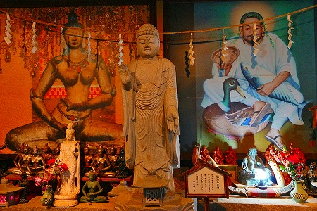

桑原寺/岐阜県
さて、と。
この寺に関しては色々あって、どこから話を初めていいものやら。
いずれにせよ腹据えて報告せねばいかん案件であることだけは間違いない。
そしてその魅力を全て伝えきる自信がないのも今の時点で何となく予見している。
つまりメチャメチャ面白いのだが、その面白さが伝わるのかどうか、まあ、とりあえず聞いて下さい。私のブルース。
…この寺の存在を知ったのは随分前のことだった。
98年に訪問した愛知県の風天洞の記事を書こうと思ってネットで検索したら風天洞のサイトにもう一つ妙な寺のサイトがくっついていたのだ。

それが桑原寺だった（現在は桑原寺のサイトは独立しており、逆に風天洞のサイトがなくなっちゃったよ）。
その素敵過ぎる佇まいに興奮し、耳垂をだらだら流しながら後先考えず、中津川に車を飛ばしたのはもう10年以上前になる。
中津川市の、木曽川の渓谷からほど近い場所に件の寺はある。

渓谷にかかる橋の向こうに見えるのがその寺である。
そのお寺の名は桑原寺。
佛国宗という聞いたことのない宗派の本山なのだとか。
日本武道館のような八角形の屋根が印象的な本堂だ。
その奥にも八角形の屋根が見える。
本堂の前には無数の石仏が乱立している。
最初にお寺を見た瞬間に、私は「当たり」を確信した。
手あたり次第、という言葉がぴったりなほど節操なく石仏が並んでいたのですよ。
そして崖に彫り込まれた巨大な釈迦三尊像が現れる。コレかなりでかいです。
…と、ここまでは10年前のおハナシである。
ここから私と桑原寺の「長き静かなる闘い」がはじまるのだ。
いや単に何度行っても開いてなかった、というだけなんですけどね。
ざっくりいうとこの寺、人が常駐していないのだ。
勿論私もこれまで色んなケースに遭遇してきた人間である。
電話でアポ、という大抵の中学生以上なら出来るテクを駆使するのもいいだろう。
しかし事前に何度も連絡したところで電話には出ない。
というわけでアポなしで直接足を運ぶこと数回。
何度行っても無人状態。
本堂の前で電話をかけてみるものの、本堂前にある無人のプレハブ小屋の中から電話の呼び出し音が聞こえてくるだけ。
ダメだこりゃ。
何度この閉まったシャッターに膝を崩したことか。
だって開運十界めぐりですよ！絶対面白そうじゃない？！
…言っておきますけど、ここ、中津川ですからね！
俺ん家から車で5時間以上かかりますからねっ！
そうこうしている内に噂を嗅ぎ付けた珍スポット上級者の面々が続々と内部への潜入（というか参拝か）を果たし、その成果をネットで報告するのを歯ぎしりしながら見る日々が続いた。
そして2012年秋。ついに内部に参拝することが出来たのだ！
最早開いてないのがデフォルトと思っているので、行ってみて管理人の方がいらっしゃった時には逆にびっくりした。
5度目の訪問で中に入れたのはラッキーなのかアンラッキーなのか、それは判らない。
ただし、今考えてみれば毎日電話かけた方がはるかに効率的だったような気がする…。
ま、いっか。入れたんだから。
…というわけで、管理人さんに案内していただき桑原寺の内部を拝観させていただく。
外階段を上り、本尊が祀られる本堂部分の裏に回るといきなり大量の聖徳太子の像が出迎えてくれる。
天井まで届かんがばかりの聖徳太子ピラミッド状態！
八千太子とあったから八千体なんだろうね。みっしり並んでいるよ！
そういえばこんな雑誌とかに出ちゃってさあ〜、などとおもむろに渡されたのが某週刊誌の珍寺特集。
日本にこんな変な寺があります！的な特集で、うわっ！これ俺の記事か？！と思ったら知り合いの某写真家さんの記事だった。
ピックアップしてるお寺のラインナップがあまりにも当サイトで取り上げているお寺に似ているので、自分の記事と勘違いしちゃいましたよ…。
兎も角。
やはり気になるのは階下の十界めぐり。
これまで何度も閉ざされたシャッターの前で青汁並みの苦汁を舐めまくってきたものだから、もう一刻も早く入りたくって、入りたくって。
もう、週刊誌の記事とかどうでもいいから、早く下の階に案内してくださいー！
…という念をブリブリ送っているのだが、管理人さん（住職ではない、事情は後に知る事であろう）はこっちのことなどどこ吹く風で、週刊誌に載ったことを軽自慢。
…我慢する事、数十分。ようやく十界めぐりに入る事が出来た！
（極楽！）
（地獄…）
八角形の本堂の１階、というか多分かつてはピロティのようになっていたのだろう。
そこを壁で塞いで造った十界めぐり。
十界めぐりとは言わずと知れた死後の世界の事で、地獄界、餓鬼界、畜生界、修羅界、人界、天界の六道にさらに４つの世界をプラスしたもの。
天台宗とかで使われますよね。
ただ、案内図を見る限りでは十界についての表記はない。
どちらかと言うと七福神めぐりじゃねえのか、とは思ったものの、とりあえず中に入ってみることにする。
中に入ると、いきなり仁王様がお出迎え！
その脇の壁面にはこれまた聖徳太子像がずらりと。
鉄骨の梁や天井のトタン板は武骨なものの、床面は人工的に斜面をつくってあり、そこはかとなく幽玄の世界を演出している、ような気がする。
何故か相撲取りも。
どこか日本離れした彫像群が延々と続く。
…何となく見たことないですか？
そう、この桑原寺は延命寺大秘殿（現在閉鎖）や風天洞と同じ豊田市のH和尚が住職を務めているのだ。
遠方に居住するゆえH和尚が来ることはほとんどなく、こうしてごくたま〜に管理の方が来るだけなのだ。
この寺、かつては別の住職が運営しており、聖徳太子が並ぶ階上の部分だけだった。
ところが、寺院運営が困難になり、H和尚が居抜きで買い取った（この辺の正確な言い方が判らないので、あえて俗っぽい表現を使わせていただきますよ）。
その結果。
大秘殿や風天洞同様、仏教寺院の設定の地平線をぶっちぎるような極上の脳内楽園が出来上がってしまったのだ。

赤い照明がやけにアングラ感を演出している。

そして薄暗い空間に脈絡もポリシーも信念もなくただやたらと仏像や神像が並べられている。
この桑原寺の十界めぐり、そして大秘殿や風天洞、に共通するコンセプトがあるとするならば、それはただ一点「混乱」していることである。
大量の神仏を無秩序に並べた混乱の中から秩序を生み出そうとしているのだろうか。
確かに、混乱はしているがゴミ屋敷なわけではない。
イザナギとイザナミがグルグルシェイクいていたような混沌とした世界。
シェイクしてもしても混じり合わない神々をそのまま展示した世界観は、この住職が従来の宗教にとらわれないビジョンを持っている事を雄弁に物語っている。
ある種の天才、なのだろう。
ここに呈示された世界は創造主である住職の脳内に確固として存在する世界なのだ。
他人から教わったものではなく、あくまでも自分の信じる世界を構築する。
それによって誰も見たことのない世界がこの世にあらわれる。
そしてその個人の脳内にあった世界を具現化することで他人がその世界観を知ることが出来る。
素晴らしい事だね。
まさに住職の頭の中をぐるぐると巡っているようなものだ。
十界めぐりの終盤には地獄も登場する。

赤鬼、青鬼がお出迎え。
造型的に伊豆極楽苑の鬼との共通点が見られるが、以前極楽苑さんに聞いたところ、思い当たる節はないとのこと。
もしかしたら、以前箱根で経営していたという極楽苑さんの別館の鬼が何らかの理由でここに流れてきた可能性もある。
いや、それ以外にここの鬼と極楽苑の鬼が似ている理由が思いつかないのだが。
こちらの地獄もなかなか趣深い。
こちらも…。
チープな手作り仏から大陸製の仏像から美術品のような仏像から土産物の仏像まで、種類だけでなくクオリティもさまざまである。
七福神が所々に配置されている。
この十界めぐりをプロデュースされたH和尚の中でも七福神は重要なファクターなのだろう。

そして大秘殿や風天洞でもおなじみ、秘部まるだしのチベットの秘仏と料理の神様。
体中に紙の札を貼り付けられ放題貼り付けられた女神も大秘殿や風天洞にもあったなあ。
最後の方は小さめの仏像がぎっしり並んでいた。
道教の神様なども混ざり、混沌に拍車がかかりまくり。
もう手が付けられないほど過剰にして過密、カオスそのものだった。
尻子玉が抜かれたような気分で十界めぐりを出る。
出口からそのままさらに別の部屋に入る。
ヨクワカラナイ石を敷き詰めたベッドがあった。
なんでもエネルギーが何とかこうとかと仰っていた。
寝てみようと思ったが、まあ、へそ曲がりな拙者のことだから、相手の親切心を踏みにじる類のコメントをしそうなので止めておいた。
…というか、もう充分別種のエネルギーをたっぷりと注入されましたんで、どうぞお気遣いなく。こっちお腹いっぱいなんで。
何度も無駄足を踏んだが、今となっては入れていただいてありがとうございました、という感謝の気持ちでいっぱいでございます（澄んだ目）！
また行きたいけど、入れるかなー？
2012.10.
珍寺大道場 HOME